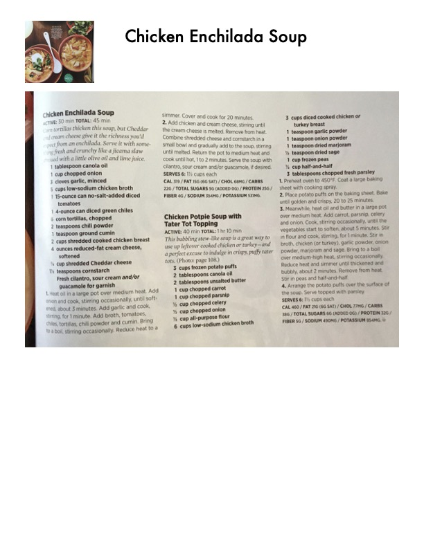

Chicken Enchilada Soup

Original cookbook page 71
Corn tortillas thicken this soup, but Cheddar and cream cheese give it the richness you'd expect from an enchilada. Serve it with something fresh and crunchy like a jicama slaw dressed with a little olive oil and lime juice.
Total: 45 min
Ingredients
- 1 tablespoon canola oil
- 1 cup chopped onion
- 3 cloves garlic, minced
- 5 cups low-sodium chicken broth
- 1 15-ounce can no-salt-added diced tomatoes
- 1 4-ounce can diced green chiles
- 6 corn tortillas, chopped
- 1 teaspoon chili powder
- 1 teaspoon ground cumin
- 2 cups shredded cooked chicken breast
- 4 ounces reduced-fat cream cheese, softened
- ½ cup shredded Cheddar cheese
- 1½ teaspoons cornstarch
- Fresh cilantro, sour cream and/or guacamole for garnish
Instructions
- Heat oil in a large pot over medium heat. Add onion and cook, stirring occasionally, until softened, about 3 minutes. Add garlic and cook, stirring, for 1 minute. Add broth, tomatoes, chiles, tortillas, chili powder and cumin. Bring to a boil, stirring occasionally. Reduce heat to a simmer. Cover and cook for 20 minutes.
- Add chicken and cream cheese, stirring until the cream cheese is melted. Remove from heat. Combine shredded cheese and cornstarch in a small bowl and gradually add to the soup, stirring until melted. Return the pot to medium heat and cook until hot, 1 to 2 minutes. Serve the soup with cilantro, sour cream and/or guacamole, if desired.
Recipe #71 from collection